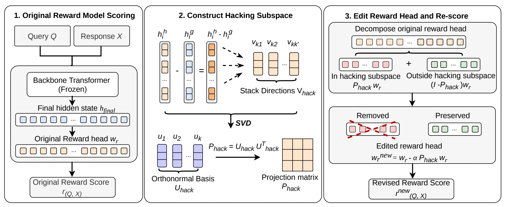

Find fooled pairs
For each selected attack subcategory, keep training examples on which the original reward model scores the hacked response above the gold response.
Contrastive examples† Corresponding author
WHEN CONVINCING ANSWERS FOOL THE REWARD MODEL
HARVE uses matched gold and hacked answers to identify residual-stream directions associated with reward hacking. A geometric edit to the scalar reward head then reduces sensitivity to those directions, without gradient updates or changing the transformer backbone.

Reward models can prefer fluent, polished answers that contain a targeted error. The paper introduces RewardHackBench to expose these failures and HARVE to address them. Across eight scalar reward models, editing a subspace of the reward head improves preference for correct answers on targeted attack categories while largely preserving performance elsewhere. The method uses contrastive examples to calculate the edit, but requires no fine-tuning or backpropagation. The full abstract and experiments are in the paper.
REWARDHACKBENCH
Each pair contains a gold response and a plausible hacked response to the same query. The held-out test split contains 548 professional-domain and 419 general-purpose pairs.
Gold-preference rate is the share of pairs on which a reward model scores the gold response above the hacked one; higher is better. Table 1 shows that even models with strong overall scores can fail sharply on particular attack subcategories.
THE METHOD
For each selected attack subcategory, keep training examples on which the original reward model scores the hacked response above the gold response.
Contrastive examplesAverage the hacked-minus-gold final hidden-state differences within each selected subcategory. Use SVD to obtain an orthonormal basis for their combined span.
Multiple directionsSubtract a scaled projection of the reward-head vector onto that subspace. Select the edit strength on development data, then score with the unchanged backbone.
No gradient updateswrnew = wr − α Phack wr
HARVE targets selected low-performing subcategories for each reward model. The strength α is tuned on a development split under a general-capability preservation constraint; the reported test split and RM-Bench are held out.
EIGHT REWARD MODELS · HELD-OUT RESULTS
Compared with the original reward models, HARVE raises gold preference on the target subcategories by 22.4 percentage points on average. It also exceeds the stronger fine-tuning baseline by 15.1 points on average.
| Reward model | Original | Best fine-tune | HARVE |
|---|---|---|---|
| Skywork-V2-Qwen3 · 0.6B | 53.16 | 58.36 | 83.64 |
| InternLM2-reward · 1.8B | 58.93 | 62.50 | 78.57 |
| GRM-Llama-3.2 · 3B | 46.47 | 54.28 | 72.86 |
| Skywork-V2-Llama-3.2 · 3B | 75.09 | 76.90 | 92.42 |
| RM-Mistral · 7B | 67.87 | 84.48 | 90.25 |
| FsfairX-LLaMA3-RM · 8B | 57.49 | 71.50 | 86.96 |
| Skywork-Reward-Llama-3.1 · 8B | 65.94 | 73.55 | 84.42 |
| InternLM2-reward · 20B | 73.19 | 75.36 | 88.41 |
Each reward model has its own selected target subcategories. “Best fine-tune” is the stronger of the two data-augmented fine-tuning baselines for that model. On non-target subcategories, HARVE improves over the original model for six of eight models; full results and trade-offs are in Table 2 of the paper.
REFERENCE
@inproceedings{liu2026harve,
title = {HARVE: Hacking-Aware Reward-Head Vector Editing
for Robust Reward Models},
author = {Liu, Shuang and Bo, Yuxuan and Zhao, Qiuyang and
Huang, Caiyue and Chen, Xiaorong and Liu, Yanguang
and Du, Mengnan},
booktitle = {Proceedings of the 2026 Conference on Empirical Methods
in Natural Language Processing},
year = {2026},
url = {https://arxiv.org/abs/2606.03131}
}